Aster 使用手册
更新日期：2026-07-08
本文档用于交付给酒店日常使用人员，说明 Aster 桌面客户端的基础操作、业务流程、常见注意事项和问题处理。文档不要求使用人员了解数据库、程序部署或开发知识。
1. Aster 是做什么的
Aster 用于管理酒店日常物资流转，重点解决以下问题：
- 物品档案是否完整。
- 采购入库是否有记录。
- 内部员工领用了哪些物资。
- 酒店客人购买了哪些商品。
- 当前库存还剩多少。
- 库存金额和成本如何计算。
- 哪些物品低于预警线。
- 月度入库、出库、销售毛利和盘点差异如何查看。
- 本地数据如何备份、恢复和多电脑使用。
通俗理解：
- 入库：物资进入库存。
- 出库：物资离开库存。
- 台账：当前库存结果。
- 流水：库存变化过程。
- 批次：同一个物品不同采购时间、不同采购价格形成的库存来源。
2. 适用人员
本文档适用于以下人员：
- 仓库员：负责物品档案、入库、出库、盘点和导入。
- 酒店管理人员：查看报表、审核预算、检查库存异常。
- 部门查看人员：查看本部门领用和相关统计。
- 系统管理员：维护账号、系统设置、备份恢复和多电脑连接。
不同账号看到的菜单可能不同。如果看不到某个菜单，通常是权限原因，请联系管理员。
3. 基本使用原则
日常使用请遵守以下原则：
- 先维护基础资料，再录入业务单据。
- 入库和出库必须按真实业务时间填写，日期要包含时间。
- 入库价格按本次实际采购价格填写，不要只依赖参考进价。
- 客人销售要填写真实销售价格。
- 出库成本由系统按入库批次自动计算，员工不用手工计算。
- 单据确认后会影响库存，确认前必须核对物品、数量和金额。
- 大量导入、恢复备份、作废单据前，应确认已有可用备份。
4. 安装与打开
Aster 支持 Windows 和 macOS。
4.1 Windows
- 双击安装包。
- 按安装提示完成安装。
- 从桌面图标或开始菜单打开 Aster。
4.2 macOS
- 打开
.dmg安装包。 - 将 Aster 拖入应用程序。
- 从启动台或应用程序目录打开 Aster。
如果系统提示安全验证，请按公司内部安装要求处理。
5. 登录、记住账号和找回密码

5.1 登录
打开客户端后，在登录页输入账号和密码，点击“登录”。
如果登录失败，请检查：
- 用户名是否正确。
- 密码是否正确。
- 当前电脑是否已经连接主电脑。
- 主电脑是否正在运行。
5.2 记住账号密码
登录页可以勾选“记住账号密码”。
勾选后：
- 当前电脑会保存本次登录的用户名和密码。
- 下次打开客户端时会自动带出。
取消勾选后：
- 当前电脑保存的登录信息会被清除。
注意：该功能只建议在酒店内部受控电脑上使用，不建议在公共电脑上勾选。
5.3 找回密码
点击登录页“找回密码”，会打开找回密码窗口。
一般流程：
- 输入用户名。
- 点击“发送验证码”。
- 到绑定邮箱中查看验证码。
- 输入验证码。
- 输入新密码。
- 点击“重置密码”。
如果收不到验证码，请检查：
- 用户账号是否绑定邮箱。
- 系统设置中是否配置了发件邮箱。
- 邮箱是否进入垃圾邮件。
- 主电脑是否可以正常访问邮箱服务器。
6. 多电脑连接
Aster 可以单机使用，也可以在局域网内多电脑使用。
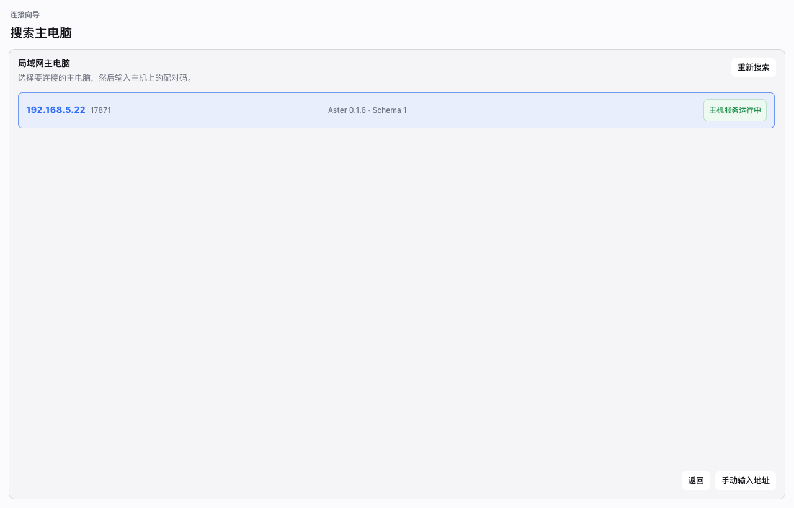
常见模式：
- 主电脑：保存主要业务数据，开启主机服务。
- 客户端电脑：连接主电脑，共用主电脑上的库存数据。
6.1 第一次在客户端电脑登录前连接主电脑
如果账号是在主电脑上创建的，新电脑第一次使用前需要先连接主电脑。
操作流程：
- 打开客户端。
- 在登录页点击“连接主电脑”。
- 在连接向导中搜索主电脑。
- 选择搜索到的主电脑。
- 输入主电脑界面上显示的配对码。
- 填写这台电脑名称。
- 点击连接。
- 连接成功后，再返回登录页使用主电脑上的账号登录。
6.2 搜索不到主电脑
请检查：
- 主电脑是否开机。
- 主电脑是否已经开启主机服务。
- 两台电脑是否在同一局域网。
- 防火墙是否阻止主机服务端口。
- 客户端是否可以访问主电脑 IP。
如果自动搜索不到，可以点击“手动输入地址”，填写主电脑 IP 和端口。
6.3 主电脑管理已连接设备
主电脑可以查看已连接的其他电脑。
如果某台设备不再使用，管理员可以将其移除。移除后，该设备需要重新配对才能继续连接。
7. 首页工作台
首页用于快速了解当前运营状态。
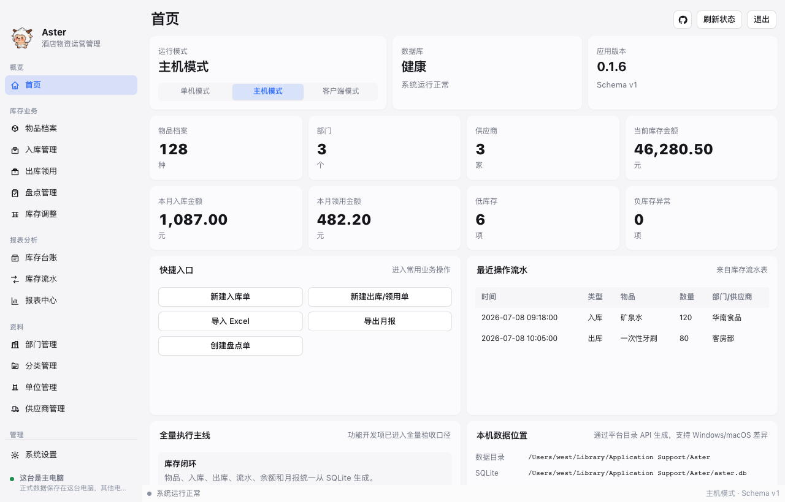
常见信息包括：
- 当前库存概况。
- 低库存预警。
- 最近入库、出库、盘点和调整记录。
- 当前运行模式。
- 数据目录、备份目录和导出目录。
建议每天打开系统后先查看首页，确认是否有库存异常或备份提醒。
8. 物品档案
物品档案用于维护酒店所有需要管理库存的物品，例如矿泉水、牙刷、拖鞋、清洁用品、工程耗材等。
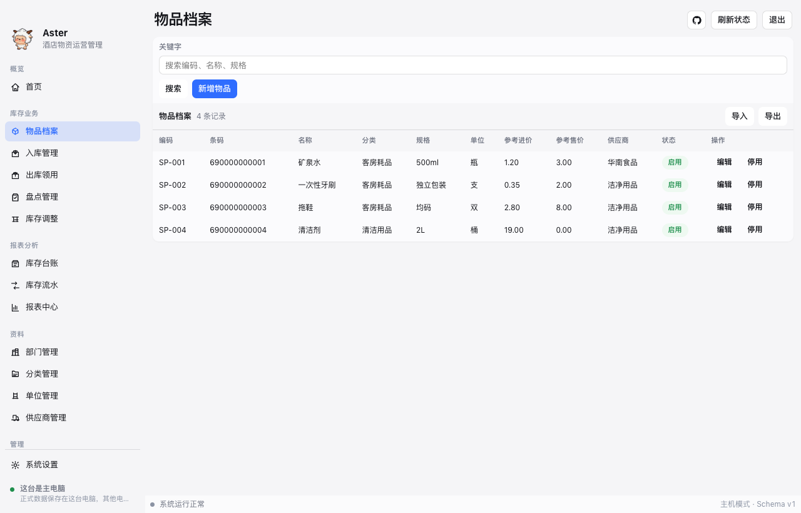
8.1 新增物品
进入“物品档案”，点击“新增物品”，填写：
- 物品名称：例如矿泉水、牙刷、拖鞋。
- 条码：可选，有扫码枪时可填写商品条码。
- 分类：用于筛选、报表和预算统计。
- 规格：例如 500ml、10 个/包、独立包装。
- 单位：例如瓶、件、包、盒。
- 参考进价：采购入库时默认带出的参考价格。
- 参考售价：酒店客人销售时默认带出的参考销售价格。
- 默认供应商：常用供应商，可选。
- 预警线：低于该数量时进入库存预警。
- 备注：补充说明。
8.2 参考进价和参考售价
参考进价和参考售价只是录入时的默认值，不代表每次业务的最终价格。
例如：
- 矿泉水参考进价 1.20 元，本次采购实际 1.35 元，入库时应填 1.35 元。
- 矿泉水参考售价 3.00 元，本次促销卖 2.00 元，客人销售时应填 2.00 元。
8.3 导入和导出物品档案
物品档案列表有导入、导出功能。
- 导入：选择 Excel，只导入物品档案，不生成入库和出库单据。
- 导出：按当前筛选条件导出物品档案 Excel。
客户端模式下，导出文件会保存到当前电脑自己的默认导出目录。
8.4 停用物品
不再使用的物品可以停用。
停用后：
- 不建议再用于新单据。
- 历史单据和历史报表仍然可以查看。
9. 分类、单位、部门、供应商
这些资料是业务单据和报表的基础。
9.1 分类
分类用于区分物品类型，例如：
- 客房耗材。
- 餐饮用品。
- 工程用品。
- 清洁用品。
分类会影响筛选、报表统计、预算规则和盘点范围。
9.2 单位
单位用于数量展示，例如瓶、件、包、盒、套。
新增物品前，应先维护好常用单位。
9.3 部门
部门用于内部员工领用和部门报表，例如客房、餐饮、工程、行政办。
内部员工领用必须选择部门。
9.4 供应商
供应商用于入库采购记录。
供应商页面可以查看供应商采购记录，方便核对历史采购。
10. 入库采购
入库用于记录采购到货，库存数量增加。
进入位置：入库菜单。
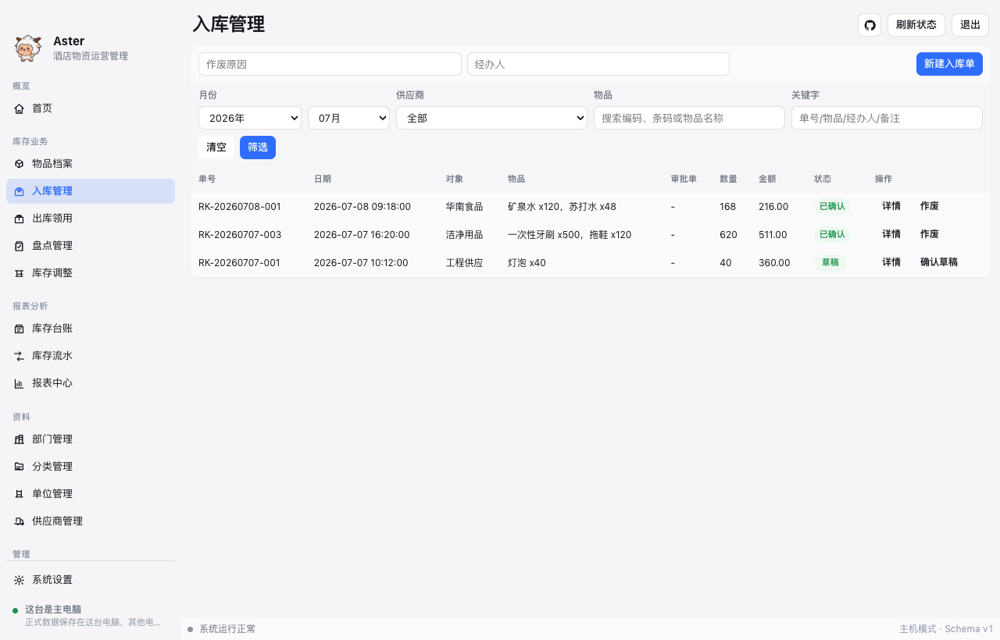
10.1 新建入库单
点击“新增入库”，填写：
- 业务日期：真实入库日期和时间，不能选择未来时间。
- 供应商：本次采购供应商。
- 经办人：实际处理人。
- 备注：采购说明。
- 商品明细：选择物品，填写数量、本次进价和采购金额。
选择商品时支持模糊搜索，下拉结果中选择正确物品。
10.2 入库价格和批次
同一个物品每次采购价格可能不同。
Aster 会按每次确认入库生成采购批次。每个批次会记录：
- 入库时间。
- 来源单据。
- 供应商。
- 本次采购单价。
- 原始数量。
- 剩余数量。
- 剩余金额。
因此，入库时必须填写本次真实采购价。
10.3 保存草稿和确认入库
保存草稿：
- 不影响库存。
- 可以后续继续修改。
确认入库：
- 库存数量增加。
- 形成库存流水。
- 生成采购批次。
- 后续出库会按批次计算成本。
10.4 入库列表和详情
入库列表可以按月份、供应商、物品和关键字筛选。
点击“详情”可以查看：
- 单据基本信息。
- 商品明细。
- 批次成本明细。
11. 出库/领用
出库用于记录库存减少。
出库分为两类：
- 内部员工领用。
- 酒店客人销售。
进入位置：出库菜单。
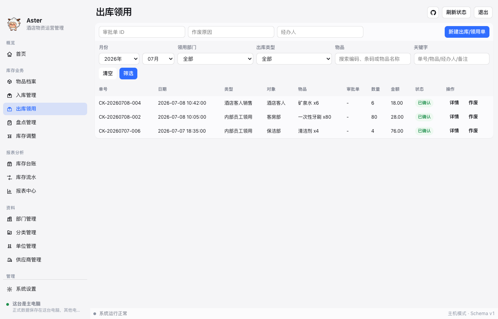
11.1 内部员工领用
适用于酒店内部消耗，例如：
- 客房领用牙刷、拖鞋、矿泉水。
- 工程领用工具耗材。
- 保洁领用清洁用品。
填写内容：
- 业务日期和时间，不能选择未来时间。
- 出库类型选择“内部员工领用”。
- 领用部门。
- 经办人。
- 用途或备注。
- 商品和数量。
内部领用不需要填写销售价格。
11.2 酒店客人销售
适用于对客销售商品，例如客人购买矿泉水、拖鞋、洗漱用品。
填写内容：
- 业务日期和时间，不能选择未来时间。
- 出库类型选择“酒店客人销售”。
- 经办人。
- 商品。
- 数量。
- 销售单价。
- 销售金额。
- 备注。
销售单价默认带出物品档案中的参考售价，可以按实际售价修改。
11.3 可用库存
出库选择商品时，列表会显示可用库存。
出库前请核对：
- 选择的物品是否正确。
- 可用库存是否足够。
- 数量是否录入正确。
11.4 出库成本如何计算
Aster 按先进先出 FIFO 计算出库成本。
例如商品 A：
- 第一次入库：5 个，单价 12 元。
- 第二次入库：10 个，单价 20 元。
出库时会先扣第一次入库的 5 个；第一次批次扣完后，再扣第二次入库的库存。
因此，同一张出库单可能对应多个入库批次成本。
11.5 客人销售低于成本
如果销售价格低于采购成本，系统允许提交。
可能原因包括：
- 促销。
- 赔偿。
- 特殊折扣。
- 售价录错。
- 采购成本异常偏高。
报表会体现销售收入、出库成本和毛利，管理人员可据此检查异常。
11.6 出库列表和详情
出库列表可以按月份、部门、物品和关键字筛选。
点击“详情”可以查看：
- 单据基本信息。
- 商品明细。
- 批次成本明细。
- 客人销售收入和成本。
12. 单据作废
如果入库或出库录错，可以按权限进行作废。
作废前请注意：
- 作废已确认单据会影响库存。
- 作废会生成反向库存流水。
- 如果入库批次已经被后续出库消耗，可能无法直接作废。
- 作废原因应填写清楚，便于后续追查。
不确定是否可以作废时，请先联系管理员。
13. 库存台账
库存台账用于查看当前库存结果。
它回答的是：现在每个物品还有多少、库存金额是多少。
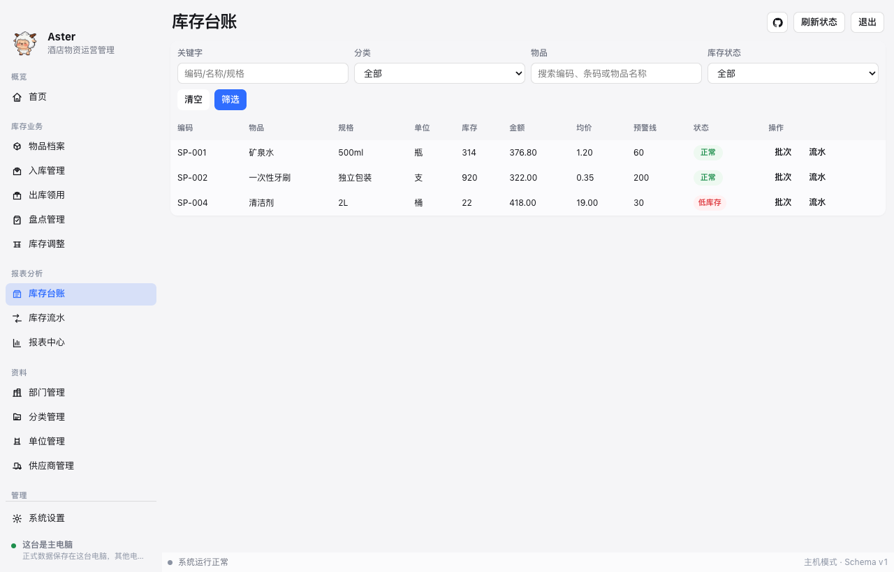
常见字段：
- 物品名称。
- 分类。
- 单位。
- 当前库存数量。
- 库存金额。
- 平均成本。
- 最近入库价。
- 预警线。
- 库存状态。
如果只是想知道库存够不够，看库存台账。
14. 库存流水
库存流水用于查看库存变化过程。
它回答的是：库存为什么变成现在这样。
每次入库、出库、盘点、调整、作废冲正都会产生库存流水。
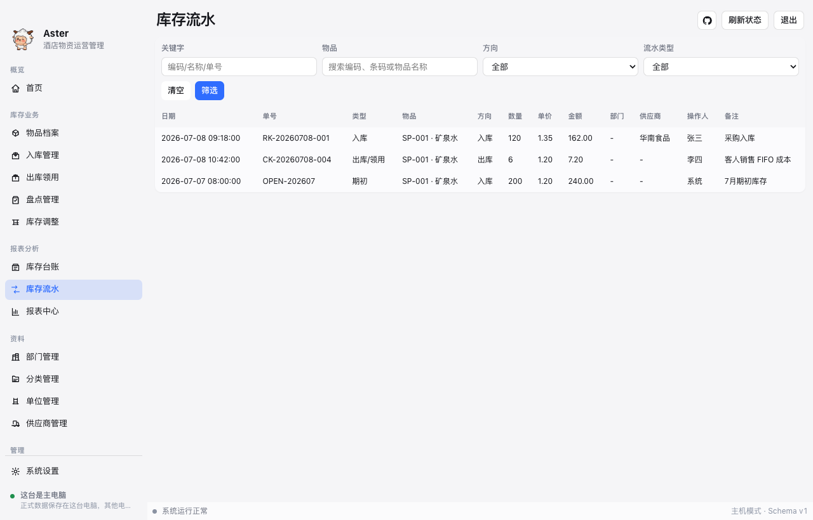
常见字段：
- 日期和时间。
- 单据号。
- 类型。
- 物品。
- 入库或出库方向。
- 数量。
- 单价。
- 金额。
- 部门或供应商。
- 操作人。
- 备注。
如果台账数量不对，需要追查原因，看库存流水。
15. 批次库存
批次库存用于查看同一个物品不同采购来源的剩余库存。
在库存台账中点击批次相关入口，可以查看某个物品的批次。
常见字段：
- 批次号。
- 入库日期和时间。
- 来源单据。
- 供应商。
- 原始数量。
- 剩余数量。
- 批次单价。
- 剩余金额。
批次库存适合用于核对成本和采购价格变化。
16. 库存调整
库存调整用于处理非正常库存变化，例如：
- 盘外增加。
- 损耗。
- 报损。
- 纠错。
填写内容：
- 调整日期和时间，不能选择未来时间。
- 调整类型。
- 经办人。
- 原因。
- 商品。
- 方向。
- 数量。
- 单价和金额。
库存调整会直接影响库存，请谨慎操作。
17. 库存盘点
盘点用于核对实际库存和系统库存是否一致。
进入位置：库存盘点菜单。
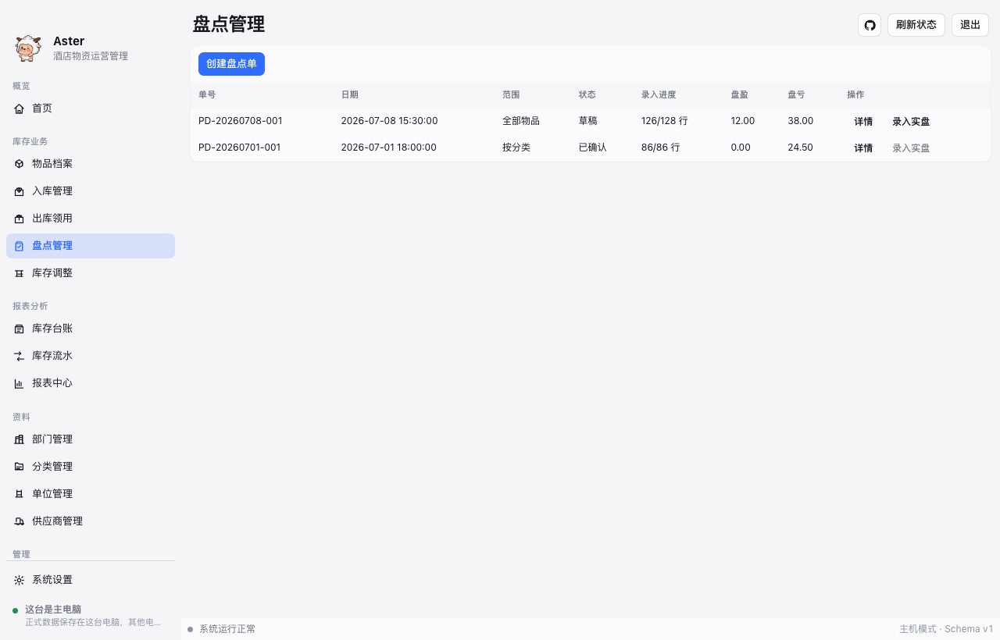
17.1 创建盘点单
点击“创建盘点单”，选择盘点范围：
- 盘点日期和时间，不能选择未来时间。
- 全部物品。
- 某个分类。
- 自定义物品。
创建后，系统会生成盘点明细。
17.2 录入实盘数量
点击“录入实盘”，填写实际盘点数量。
系统会自动计算：
- 账面数量。
- 实盘数量。
- 差异数量。
- 差异金额。
17.3 确认盘点
确认盘点后，系统会按差异调整库存。
确认前必须核对实盘数量。确认后会生成库存流水。
17.4 盘点导出
盘点表可以导出，用于线下盘点、签字或归档。
导出位置取决于系统设置中的默认导出目录。
18. 报表中心
报表中心用于查看月度经营和库存情况。
可以按月份、部门、分类、物品和供应商筛选。
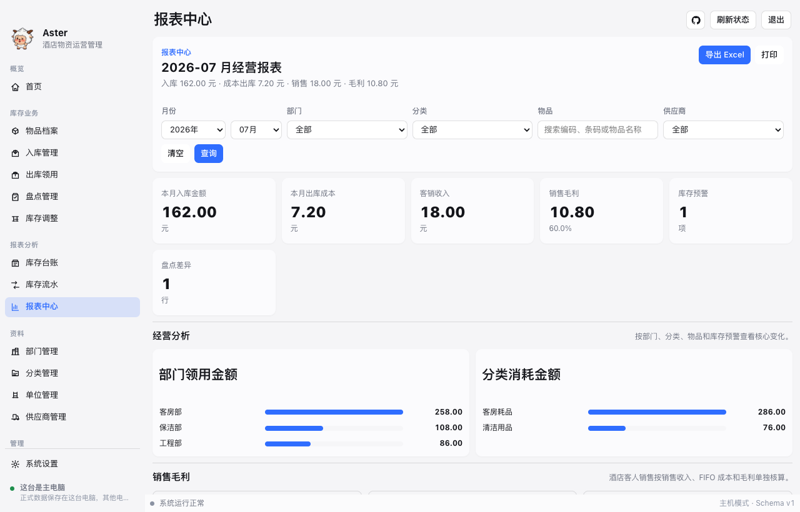
常见内容包括：
- 本月入库金额。
- 本月出库成本。
- 客销收入。
- 销售毛利。
- 库存预警。
- 部门领用金额。
- 分类消耗金额。
- 物品消耗排行。
- 盘点差异。
报表中心页面主要展示摘要和图表。完整明细建议导出 Excel 查看。
18.1 月份选择
报表月份使用月份选择控件。
查看某个月数据时，请先确认月份正确，再查看报表或导出。
18.2 客人销售毛利
客人销售毛利 = 销售收入 - FIFO 出库成本。
如果毛利为负，说明销售金额低于系统计算出的出库成本，需要管理人员核查原因。
19. Excel 导出
报表中心可导出 Excel。
导出文件通常包含：
- 月度进销存。
- 部门领用汇总。
- 部门领用明细。
- 分类消耗统计。
- 物品消耗排行。
- 入库明细。
- 出库明细。
- 销售毛利。
- 库存余额。
- 库存预警。
- 盘点差异。
如需对账、归档或发送给管理人员，建议使用导出功能。
20. Excel 导入
导入功能用于把整理好的 Excel 模板导入系统。
请使用软件生成的新版模板，不要再使用旧手工表格格式。
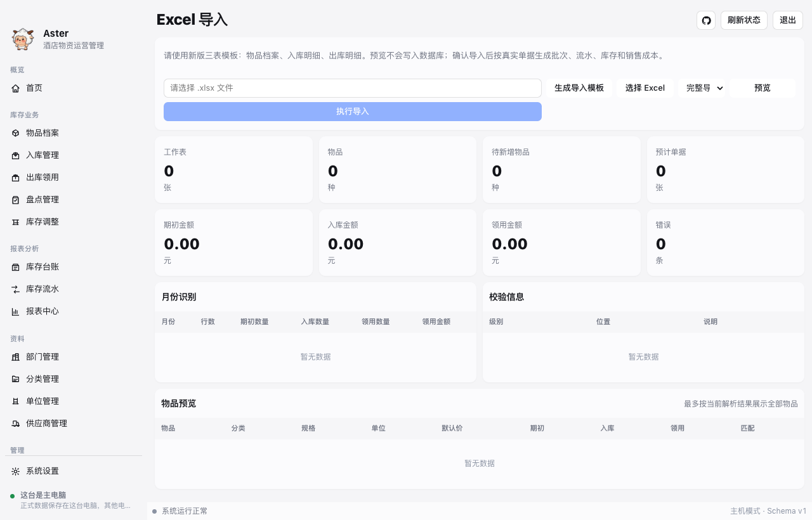
新版模板通常包含：
- 物品档案：物品编码、名称、分类、规格、单位、参考进价、参考售价和预警库存。
- 入库明细：业务时间、供应商、物品、数量、进货单价和进货金额。
- 出库明细：业务时间、出库类型、部门、物品、数量和销售单价。
业务时间必须包含真实时间，例如 2026-07-01 09:00:00。
一般流程：
- 点击“生成导入模板”。
- 打开模板，删除示例行后填写数据。
- 回到软件选择 Excel 文件。
- 点击预览。
- 查看校验信息。
- 确认无错误后执行导入。
导入后：
- 入库明细会生成真实入库单和采购批次。
- 出库明细会生成真实出库单和库存流水。
- 出库会按 FIFO 扣减入库批次。
- 酒店客人销售会记录销售收入、实际成本和毛利。
如果预览中有错误，需要先修改 Excel 或基础资料，再重新预览。
21. 预算控制
预算控制用于限制内部员工领用金额。
管理员可以按部门和月份设置预算，也可以按分类做更细的控制。
注意：
- 内部员工领用会占用预算。
- 酒店客人销售不占用预算。
- 超预算时，可能需要先走审批。
- 预算不一定必须限制到分类，按部门月份总额也可以使用。
22. 审批
审批用于处理超预算领用等需要管理员确认的事项。
一般流程：
- 员工提交业务时触发预算限制。
- 按提示发起审批。
- 管理员进入审批页面查看申请。
- 管理员通过或驳回。
- 审批通过后，再回到对应业务单据继续提交。
审批记录用于后续核查，不建议随意删除或绕过。
23. 备份与恢复
Aster 数据保存在本地电脑或主电脑上，因此备份非常重要。
23.1 什么时候需要备份
建议以下情况前确认有备份：
- 大量 Excel 导入前。
- 恢复历史备份前。
- 清空测试数据前。
- 版本升级前。
- 做大量作废或调整前。
23.2 手动备份
管理员可以在备份页面创建手动备份。
备份文件可用于其他客户端恢复出相同数据，但恢复会覆盖当前数据。
23.3 自动备份
系统可按设置进行自动备份和间隔备份。
管理员应定期检查备份目录是否正常、磁盘空间是否足够。
23.4 恢复备份
恢复备份会覆盖当前数据。
恢复前请确认：
- 备份文件来源正确。
- 备份时间正确。
- 当前数据确实可以被覆盖。
不熟悉恢复操作时，请先联系管理员。
24. 系统设置
系统设置用于维护客户端和业务运行配置。
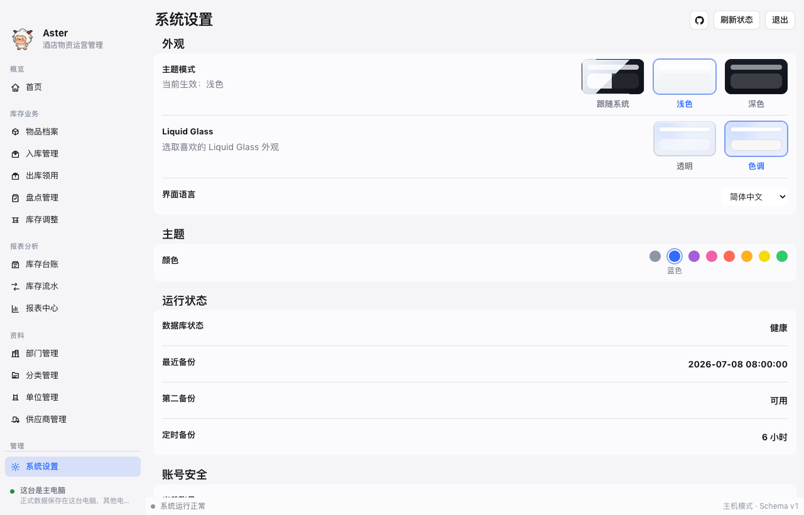
常见设置包括：
- 界面语言。
- 主题和外观。
- 默认导出目录。
- 默认备份目录。
- 业务参数。
- 邮箱验证码发件配置。
- 主机/客户端连接。
部分设置只有管理员可以修改。
客户端模式下，每台电脑可以维护自己的本地导出目录和备份目录，避免所有电脑都使用主电脑路径。
25. 用户与权限
管理员可以维护用户账号和权限。
常见角色：
- 管理员：可维护系统设置、用户、备份恢复、预算审批等。
- 仓库员：可维护物品、入库、出库、盘点和导入。
- 部门查看人员：查看本部门相关数据。
- 只读人员：只查看，不新增或修改。
如果员工离职或不再使用系统，应及时停用账号。
26. 操作日志
操作日志用于记录关键操作，便于追溯。
常见记录包括：
- 登录。
- 新增或修改资料。
- 入库、出库、盘点、调整。
- 作废。
- 备份和恢复。
- 系统设置变更。
管理员可在需要时查看操作日志。
27. 常见问题
27.1 台账和流水有什么区别
库存台账看当前结果。
库存流水看变化过程。
例如台账显示矿泉水还剩 30 瓶；如果想知道为什么只剩 30 瓶，就去看库存流水。
27.2 入库价格填错怎么办
如果单据还没确认，可以编辑草稿。
如果已经确认，需要按权限和实际情况作废后重新录入。
27.3 出库数量超过库存怎么办
系统通常会提示库存不足。
请先核对库存台账、批次库存和实际库存。
27.4 为什么客人销售毛利为负
说明销售金额低于系统计算出的出库成本。
可能原因包括促销、赔偿、售价录错或采购成本过高。
27.5 为什么看不到某个菜单
通常是当前账号没有权限。
请联系管理员确认角色和权限。
27.6 客户端为什么提示未完成主机配对
说明当前电脑还没有成功连接主电脑。
请在登录页或系统设置中打开连接向导，完成主机搜索、配对码输入和连接。
27.7 为什么导出文件找不到
请检查系统设置中的默认导出目录。
客户端模式下，每台电脑使用自己的本地导出目录。
27.8 为什么月份筛选没有数据
请确认：
- 选择的月份是否正确。
- 单据业务日期是否属于该月份。
- 是否设置了部门、分类、物品或供应商筛选条件。
27.9 日期能不能填过去或未来
业务日期允许填写过去的真实业务时间。
业务日期不允许填写未来时间。
27.10 本地数据如何在多台电脑一致
推荐使用主机/客户端模式。
主电脑保存主要数据库，其他电脑作为客户端连接主电脑。这样多台电脑看到的是同一套业务数据。
28. 日常检查清单
每天建议检查：
- 是否能正常登录。
- 首页是否有库存预警。
- 当日入库是否已录入。
- 当日出库是否已录入。
- 是否存在未确认草稿。
每周建议检查：
- 低库存物品。
- 库存台账和实际库存是否明显不符。
- 备份是否正常生成。
每月建议检查：
- 月度报表。
- 部门领用统计。
- 客人销售毛利。
- 盘点差异。
- 备份文件是否可用。
29. 交接注意事项
员工交接时，请确认：
- 是否已交接账号。
- 是否已说明本岗位常用菜单。
- 是否已说明入库和出库填写规则。
- 是否已说明不能随意作废、恢复备份和清空数据。
- 是否已说明遇到异常时联系管理员。